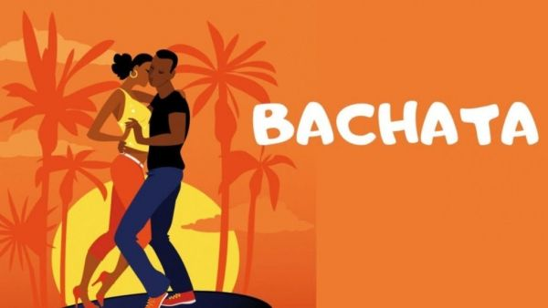
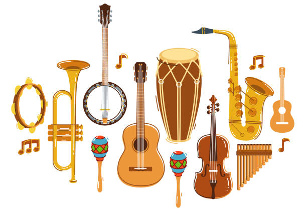
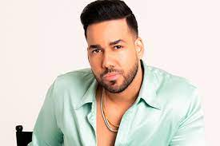
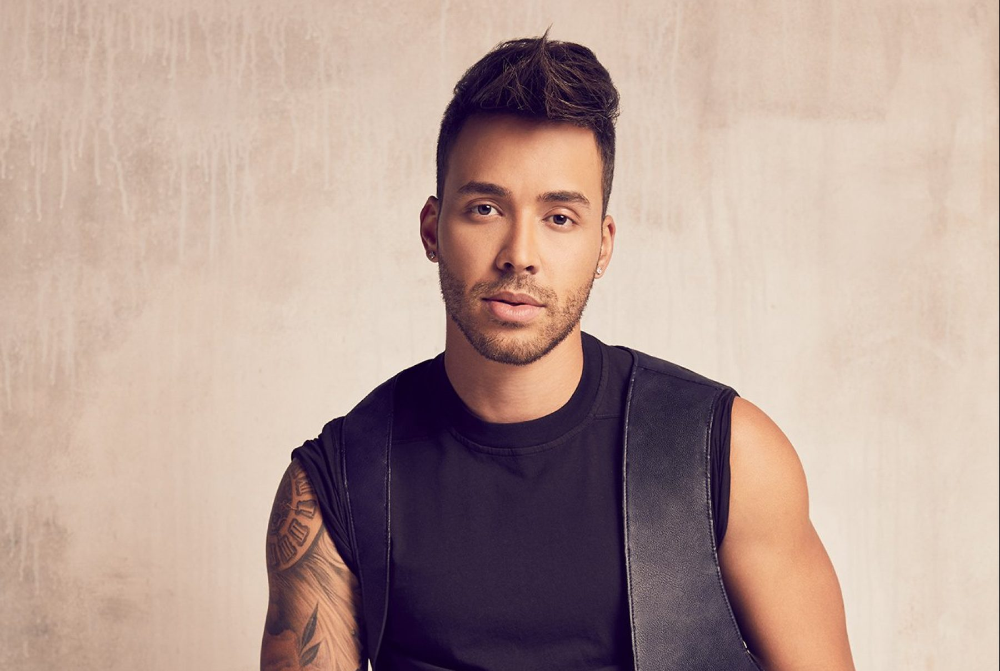

Es un ritmo musical de percusión y cuerdas originario de la República Dominicana, que tiene sus raíces en el son cubano y los ritmos africanos. Entre los instrumentos primarios se encuentran las guitarras, las marimbas, las maracas, la güira, los bongos y los timbales.
 Historia del generoAl principio, la bachata fue considerada por muchos en la República Dominicana como un ritmo de la clase baja o de los pobres, porque fue originalmente escuchada y bailada en los barrios pobres, en burdeles o en el campo. Por ello, muchos la despreciaban por considerarla vulgar, rústica y sin estilo. Durante la dictadura militar de Rafael Leónidas Trujillo (1930-1961), la bachata era reprimida y estaba relegada a los estratos más bajos de la sociedad. El propio dictador, que controlaba cada aspecto de la vida de las personas, se había encargado de que el merengue sustituyera a la bachata como la música del país. Con la muerte de Trujillo, su popularidad se acrecentó y comenzó a escucharse abiertamente en diferentes entornos públicos. Fue hacia finales de los años 80 cuando se reconoció su alta calidad musical y rítmica y logró internacionalizarse. Hoy, la bachata es el estilo dominicano por excelencia, un símbolo nacional, popular no sólo en la isla sino también en todo el mundo.
Es un tipo de música y baile muy sensual, romántico y lleno de ritmo que generalmente se baila en pareja. Su nombre en español puede ser traducido como parranda o juerga. Es considerada como una expresión musical bailable. Sus letras expresan sentimientos muy profundos de amor, de nostalgia y de pasión. Se cree que el vocablo bachata es de origen africano el cual se utilizaba para referirse a reuniones o fiestas. El ritmo musical que tiene la bachata el compás de cuatro tiempos.
Guitarra principal o requinto, Guitarra de acompañamiento o segunda, bajo, bongo, Güira.
Muchos historiadores coinciden en que el origen de la bachata se sitúa a comienzos de los años 1920, aunque en sus primeras expresiones este género parecería distar mucho de la bachata actual.
Romeo Santos. Muchos historiadores coinciden en que el origen de la bachata se sitúa a comienzos de los años 1920, aunque en sus primeras expresiones este género parecería distar mucho de la bachata actual. Pince Royce. conocido como Prince Royce, es un cantante, compositor y productor discográfico estadounidense de origen dominicano. Aventura Bachata Heightz. Daniel Santacruz. Domenic Marte. Carlos y Alejandra. El Chaval de la Bachata. Elvis Martínez.
 